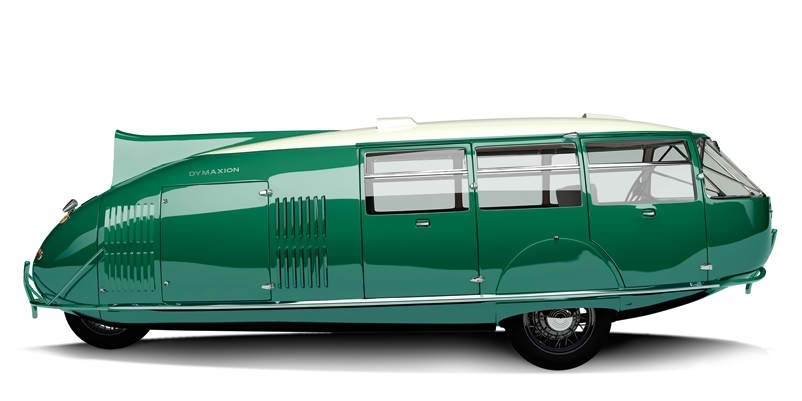

Dymaxion Car, 1933
This wasn't so much a car as the "ground taxiing phase" of a vehicle that might one day fly, land, and drive. Some idiot crashed into the prototype, but of course my vehicle was blamed. I think that's why it never became popular.
Dymaxion Map, 1943
All map projections distort the actual size of continents somewhat, but my map is the most accurate flat representation of our round earth.

Geodesic Dome, 1945
The geodesic dome was created 20 years before I came along, but I popularized the idea and was awarded a patent for it. It's a strong and light structure.